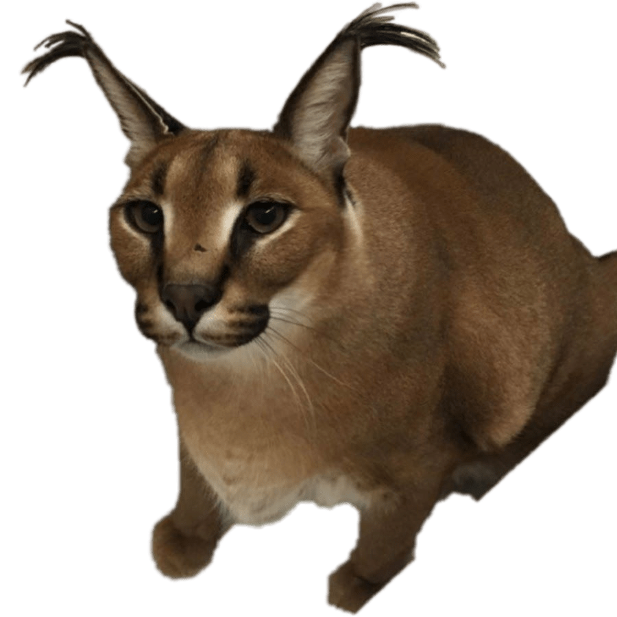

Николай Чибисов
15 лет · фронтенд-разработчик · любитель кошек · про-геймер · STALCRAFT X · пьёт зелёный чай
Обо мне

Привет! Меня зовут Николай😺
Я обожаю смотреть ютуб, играть в видеоигры и мне 15 лет.
Любимые игры : BattleBit Remastered, STALCRAFT: X, Deep Rock Galactic, DBD.
Пью только зелёный чай и ем только твёрдые сладкие яблоки (никаких мягких!).
Увлекаюсь фронтенд-разработкой - это мой сайт обо мне и моих проектах.